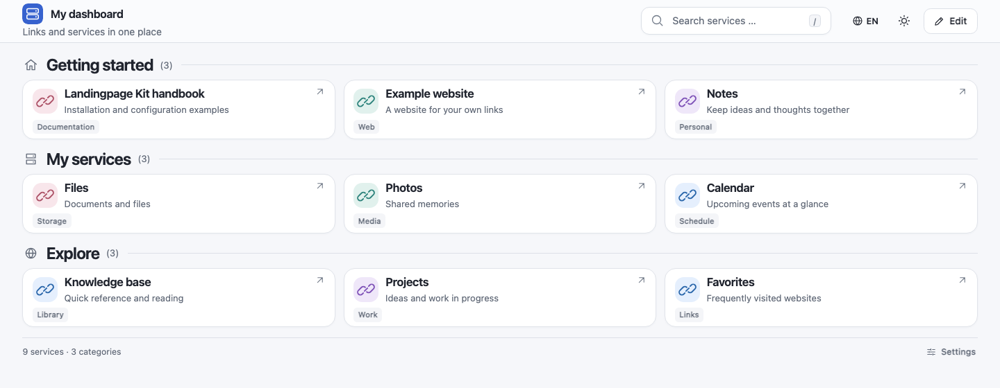

Self-hosting handbook
Your own
Landingpage.
Open your services, see their status, and organize them in one place. Follow this guide to set up the dashboard on your own server.
Installation
You’ll need a host running Docker with the Compose plugin. The default installation binds both ports to the loopback address so you can access the dashboard directly on the host. See the LAN settings below to connect from other devices. Docker Desktop includes Compose. For Linux servers, Docker Engine and the Compose plugin are available separately. Install Docker Engine · Install Docker Compose
These commands use a Unix shell. On Windows, you can run them in WSL with Docker integration enabled.
1. Prepare the files
Download the version 1.1.0 installation package. Extract it into a new directory and open a terminal there. Run the Compose commands from the directory that contains compose.yaml.
docker compose version
docker info
cp examples/en/dashboard.example.yaml dashboard.yaml
test -e .env || cp examples/en/compose.env.example .envSet DASHBOARD_LANGUAGE=en in .env to use English for the command-line tools. The English environment example already includes this setting. If .env exists, keep its existing settings and set the language in that file.
The individual YAML files and the full package are also available under Project files. To read this handbook offline, open docs/en/index.html from the extracted package.
Open dashboard.yaml in a text editor. Customize the title, categories, and links, or try the example as it is. Keep the existing IDs when updating entries.
2. Set up the dashboard and editor
docker compose pull
docker compose run --rm --no-deps -T landingpage python tools/configure.py init < dashboard.yaml
docker compose run --rm --no-deps landingpage python tools/configure.py password
docker compose up -d
docker compose psChoose a password of at least 16 characters with no leading or trailing spaces. The password command prompts for the editor password twice without displaying it and creates the local TLS certificate for a new installation. Store the password in your password manager. Use the initialization command to seed a new database.
3. Check the dashboard and sign in
On the same computer, open http://127.0.0.1:8080/. Select Edit to open the editor over HTTPS. The HTTP port serves the read-only dashboard. The editor uses a certificate issued by a local certificate authority (CA) created for your installation. Export the CA’s public certificate on the installation host. Transfer it to your browser device over a trusted connection, verify the CA’s SHA-256 fingerprint, and trust the CA on that device. You can also pass the certificate to curl for an individual request.
docker compose exec -T landingpage python tools/configure.py certificate > landingpage-local.crt
openssl x509 -in landingpage-local.crt -noout -fingerprint -sha256
curl --cacert landingpage-local.crt https://localhost:8443/Allow access from your LAN
Choose a local address on the host and a hostname that other devices on the LAN can resolve to it. Add these variables to your .env file next to compose.yaml. Replace the example address and hostname with your own, and use available ports.
DASHBOARD_BIND=192.0.2.10
DASHBOARD_EDIT_HOST=dashboard.home.arpa
DASHBOARD_HTTP_PORT=8080
DASHBOARD_HTTPS_PORT=8443On the host, generate a certificate for the selected hostname, recreate the container with the new settings, and export the new CA as shown above. Update the trust settings on your devices. Limit access to the intended network with your firewall. Anyone who can reach the read-only address can see the published cards and metrics.
docker compose run --rm --no-deps landingpage python tools/configure.py tls-local --host dashboard.home.arpa
docker compose up -d --force-recreateLoad the container image offline or build it locally
Download the image archive from the release for your Docker host’s architecture (amd64 for x86-64 or arm64 for ARM64) and verify its SHA-256 checksum against SHA256SUMS. Transfer the archive and installation package to the target host. Load the image there, then continue at the configure.py init command.
docker load -i landingpage-kit-linux-amd64.tar.gzFor a local build, extract the source code for the same version and prepare the files as shown in step 1. In step 2, run the build command below in place of docker compose pull. Include both -f options in every subsequent Compose command. The build needs access to the base images and package repositories.
docker compose -f compose.yaml -f deploy/compose.build.yaml buildSet up with an agent
Paste this request into an agent you trust to work on your target system. Include the directory where you want the project installed. A text-only assistant can give you the steps to run yourself.
Set up https://github.com/r3d42-git/landingpage-kit on my target system by following the English handbook. Check the operating system, Docker Compose, available ports, and existing files. Ask me which directory to install in and whether I need access from this computer only or also from my LAN. Use the official files for the selected release and the bundled English example dashboard. Preserve any existing installations, bind only to the address we agree on, and keep passwords and private keys out of the chat. Set up the service, verify the HTTP dashboard and the HTTPS editor, and show me the URLs, how to manage the editor password, and how to back up and update the installation. Tell me exactly what I need to do if a step requires local input. We’ll set up optional data sources after I provide the targets.
Get started with the editor
The bundled English example opens as “My dashboard.” Under Getting started, you’ll find the handbook and “Example website.” My services is an empty category ready for your first cards. Add a card there or create another category.
On your first visit, the dashboard uses the first supported language in your browser settings and defaults to German. Use the globe control marked DE or EN to switch between German and English. The browser remembers your choice. Sample content and entries you create keep their own language.


- Open the dashboard and select Edit. The browser opens the sign-in screen over HTTPS. Enter the editor password you set during installation.
- At the bottom of the page, select Add category. Enter a name such as “Tools,” choose a Category icon, and select Apply.
- Select the plus button next to “Tools.” Enter “My wiki” as the Name and your wiki URL as the Address. Add a description and leave Monitoring set to Link only. Under More options, you can add a tag and choose how the link opens.
- Select Apply, then Preview. Select Continue editing to go back to the draft. Save publishes your changes to everyone who uses the instance.
Use a card’s pencil button to edit it. Move opens the category and position controls, including on phones. Use the pencil next to a category name to change its icon, name, or position. In edit mode, Settings lets you change the page title and subtitle.
In the read-only view, use search to filter services. Select a status in the header to show matching cards. Select it again to clear the status filter.
Choose a card type
The card’s address opens the destination when you select it. The Monitoring setting controls what additional information the card displays.
- Link only
- A bookmark for a wiki, documentation, or web interface. Check availability probes the URL from the server about every five minutes. Two consecutive failures mark the site as down. Public HTTP(S) addresses on standard ports are supported. Internal destinations and other ports require explicit permission.
- HTTP availability
- Checks a permitted web address. Choose Service address or a configured HTTP data source. A separate source lets the card open a web interface while the server checks a dedicated health endpoint.
- Pi-hole
- Choose a Pi-hole data source for DNS queries and blocked requests. Expand the card to see additional metrics. The adapter needs access to a compatible statistics API.
- NAS
- Choose a storage source to show measured capacity and usage. To monitor a NAS, use a local snapshot or SNMP storage metrics available through Prometheus.
- Service metrics
- Shows named values from a data source. Examples include active scrape targets on a Prometheus server, two TCP checks for a host, and custom metrics from a snapshot file.
- YouTube channels
- Under Add channel, enter a public @handle, channel ID, or channel URL. Select Add, then Apply and Save. A card can follow up to twelve channels. The server reads public feeds to show new videos from the last 24 hours and the latest upload.
Connect a data source
Each source needs a unique id and a display name (label). The kind selects an adapter, and display_kind makes the source available for the matching card type in the editor. Keep your sources in your own integrations.yaml. Copy the example file, update its values, and import the complete list of sources you want to use.
cp examples/en/integrations.example.yaml integrations.yamlFor a first test, the example includes Dashboard HTTP status. Import the source with the commands in step 3 below. Add a card with the address /healthz and select HTTP availability and the Dashboard HTTP status source. After you save, the container checks its own health endpoint.
Example A · Check a service over HTTP
- Find the health endpoint for one of your services. This example expects a successful JSON response with a
statusfield set toUP. Replace the example domain in both places with your own. - Add the origin (scheme, host, and port if needed) and the source entry to the existing lists. If you are starting with an empty file, you can use the following configuration.
allowed_endpoints:
- https://wiki.example.org
sources:
- id: wiki-status
label: Wiki status
kind: http
display_kind: http
url: https://wiki.example.org/health
expect_json:
status: UPFor a check that only looks at the HTTP status code, omit expect_json. Status codes 200 and 204 count as successful by default.
- Save the file as
integrations.yaml. Import it, check the available sources, and reopen the editor.
docker compose run --rm --no-deps -T landingpage python tools/configure.py sources < integrations.yaml
docker compose exec -T landingpage python manage.py sources- Select the pencil button on the wiki card. Set Monitoring to HTTP availability and Data source to Wiki status. Select Apply and Save. The measured status appears after the first check. The container needs DNS and network access to the service.
Example B · Display disk usage from the host
A snapshot lets a card display measurements from the host operating system. The bundled collector measures disk usage for the filesystem selected with --path. Run it on the host with Python 3. The metrics directory is mounted read-only in the container.
mkdir -p instance/metrics
python3 examples/write-disk-snapshot.py ./instance/metrics/disk-usage.json --path /
docker compose -f compose.yaml -f deploy/compose.metrics.yaml up -dKeep using the same Compose files for subsequent commands. On a Linux host, for example, set COMPOSE_FILE=compose.yaml:deploy/compose.metrics.yaml in .env. The bundled integrations.example.yaml includes a disk usage source. If you maintain your own source list, add this entry once under sources.
- id: disk-usage
label: Disk usage
kind: snapshot
display_kind: nas
file: disk-usage.json
max_age: 180- Import the sources with
configure.py sourcesas in the HTTP example. Themanage.py sourcesoutput should list this source asnas. - Add a card in the editor. Enter its name and destination address, choose NAS, and select the source under Data source. Select Apply and Save.
- For regular measurements, schedule the Python command on the host, for example once a minute via cron or a systemd timer. Use absolute paths for Python, the script, and the output file. With
max_age: 180, the dashboard marks data as stale after three minutes without a new measurement.
Example cron job that runs every minute
Run command -v python3 and pwd from the installation directory to find the paths. Use crontab -e to open the crontab of the user who can write to the metrics directory. Add the following line with your own paths. After two minutes, check the timestamp on disk-usage.json.
* * * * * /usr/bin/python3 /opt/landingpage-kit/examples/write-disk-snapshot.py /opt/landingpage-kit/instance/metrics/disk-usage.json --path /Other collectors can write the same format. The observed_at field is the measurement time in Unix seconds. Set state to ok, warning, down, unknown, or stale. The metrics array contains objects with label and value keys. The optional progress value ranges from 0 to 100. Write to a temporary file first, then replace the destination atomically.
To publish your own bilingual readings, add label_en and, for text values, value_en to a metric. For example, {"label":"Belegt","label_en":"Used","value":"2,5 GiB","value_en":"2.5 GiB"} displays the label and value in the selected interface language. A custom label without a translation appears as entered in both languages.
Example C · Connect Pi-hole and Prometheus
Merge these entries into your existing source list or use the example to start a new integrations.yaml. Substitute the hostnames and ports from your network. For HTTPS, the container must trust the destination’s certificate.
allowed_endpoints:
- https://dns.home.arpa
- http://prometheus.home.arpa:9090
sources:
- id: dns-statistics
label: DNS statistics
kind: pihole
display_kind: pihole
url: https://dns.home.arpa/api/stats/summary
- id: prometheus-targets
label: Prometheus targets
kind: prometheus
display_kind: service
url: http://prometheus.home.arpa:9090Pi-hole v6 exposes its statistics summary at /api/stats/summary. The direct adapter expects the monitoring path to be accessible without signing in or creating a session. Check whether your monitoring setup allows this access. For a protected API, use a host-side collector with credentials kept on the host. Have it write a snapshot as in Example B. For the Pi-hole card, set display_kind to pihole. Give the query and blocked-query metrics a key, label, and label_en. Use the keys queries and blocked so both metrics appear in the main view of the card. Pi-hole API and local documentation
docker compose run --rm --no-deps -T landingpage python tools/configure.py check-sources < integrations.yaml
docker compose run --rm --no-deps -T landingpage python tools/configure.py sources < integrations.yaml
docker compose exec -T landingpage python manage.py sources- Add a DNS card. Select Edit and the plus button next to a category. Name the card “DNS filter” and enter the URL of your Pi-hole interface as its address. Set Monitoring to Pi-hole and choose DNS statistics as the Data source. Select Apply and Save. The read-only view shows DNS queries and the share that were blocked. More metrics shows additional details, including the number of active clients.
- Add a service metrics card. Use the plus button to create a second card called “Monitoring” with the URL of your Prometheus interface. Choose Service metrics and the Prometheus targets source, then select Apply and Save. The adapter reads
/-/readyand/api/v1/targets?state=active. After the first check, the card shows how many scrape targets are up or down.
Other adapters
- TCP port and host
tcpuses atcp://URL with an explicit port.hostrequires two entries undertargets, each with alabeland aurlfor the same host on a different port. Allow each origin individually underallowed_endpoints.- Pi-hole
kind: piholereads a compatible statistics API at the configuredurl. Optionally provide ablocking_urlon the same origin and a localdns_fileto add the blocking state and a DNS check.- Prometheus and SNMP storage
- Set
urlto the Prometheus base URL for bothprometheusandsnmp_volume. Forsnmp_volume, also specifyjobandinstance, and use the value ofhrStorageDescrforvolume. The exporter must supply the selected volume’s size, used units, and allocation unit size. - Bundled host collectors
- The utilities in
tools/can read Checkmk Livestatus data, Proxmox metrics, or storage usage over a restricted SSH connection. See their options withpython3 tools/collect_checkmk.py --help,python3 tools/platform_metrics.py --help, orpython3 tools/collect_ssh_storage.py --help. Manage credentials, private keys, and monitoring permissions on the host.
Backups and updates
Export cards and logos
Save your draft and, while signed in, open Settings → Backup → Export. The ZIP file contains the saved categories, cards, and local logos. To import it, select Restore, open your ZIP file, and confirm that you want to replace the current content. Back up the current dashboard first.
umask 077
docker compose exec -T landingpage python manage.py backup > dashboard.zip
docker compose exec -T landingpage python manage.py restore --confirm < dashboard.zipBack up and restore the entire instance
The Compose volume named dashboard-data contains the SQLite database, active sources, seed data, editor password, and private TLS key. Stop the service for a consistent backup. Choose a new filename for each backup. Restart the app after exporting and check the archive contents.
umask 077
docker compose stop landingpage
docker compose run --rm --no-deps -T landingpage tar -C /data -czf - . > volume-backup.tar.gz
docker compose start landingpage
tar -tzf volume-backup.tar.gzKeep the archive encrypted and restrict access to it. Separately back up your .env, YAML files, local collectors, schedules, and external metrics. Record the image version you are using.
Test the restore in a new installation directory with the same Compose file and image version. Copy your trusted backup there. Use a new Compose project name to create a separate volume and choose available loopback ports. Before starting, verify the bind address and check that the restored certificate covers the editor hostname.
docker compose -p landingpage-restore run --rm --no-deps -T landingpage tar -C /data -xzf - < volume-backup.tar.gz
DASHBOARD_BIND=127.0.0.1 DASHBOARD_HTTP_PORT=18080 DASHBOARD_HTTPS_PORT=18443 docker compose -p landingpage-restore up -d
docker compose -p landingpage-restore exec -T landingpage python manage.py showOpen the restored dashboard on port 18080 and check the categories and logos. Sign in and check that you can edit. To stop the test instance, run docker compose -p landingpage-restore stop.
Change the password and renew the certificate
Set a new password on the Docker host, then restart the service to load it. You can use the same steps if you forgot your editor password.
docker compose run --rm --no-deps landingpage python tools/configure.py password
docker compose restart landingpageThe local server certificate is valid for one year. To renew it, run configure.py tls-local as shown in the LAN section, including every required --host argument. Restart the service and export the new CA for your devices.
Upgrade to a new version
- Back up the ZIP and the volume. Record the current image tag and read the release notes.
- Update the Compose configuration in the existing installation directory with the files for the new version. Keep your
.env, any additional Compose files, and the Compose project name. Changing the project name can create a new volume. - Pull the target image and recreate the service. Check the cards and the HTTPS editor afterward.
docker compose pull
docker compose up -d
docker compose ps
docker compose logs --tail 50 landingpageUpdate the dashboard with YAML later
The alternative template examples/en/dashboard-monitoring.example.yaml describes a complete dashboard with the dashboard-health and disk-usage data sources. You can copy individual card definitions into your own YAML file.
After the first startup, the dashboard lives in SQLite. To make a YAML update, compare the complete dashboard you want with the saved version. Review any entries the preview would remove. When applying the changes, replace N with the revision shown in the preview.
docker compose exec -T landingpage python tools/configure.py preview < dashboard.yaml
docker compose exec -T landingpage python tools/configure.py apply --revision N < dashboard.yamlIf there is a revision conflict, generate a new preview and reconcile any changes made in the meantime.
Troubleshooting
The dashboard won’t load
From the installation directory, run docker compose ps and docker compose logs --tail 50 landingpage. Check which host ports are in use, the configured bind address, and whether the URL uses HTTP or HTTPS as expected. With a loopback bind address, access the dashboard directly on the host.
The editor opens the wrong address or reports a certificate error
Compare the hostname or IP address and HTTPS port in the link with your installation. The certificate must cover that address. Export the current local CA as shown in the installation section. Compare its SHA-256 fingerprint through a trusted connection to the host and make sure your browser trusts that specific CA.
openssl x509 -in landingpage-local.crt -noout -fingerprint -sha256A data source is missing or a value is stale
Check your sources YAML, the output of manage.py sources, and the selected card type. An allowed HTTP origin must match the destination’s origin exactly. For snapshots, check the filename, read permissions, and timestamp. “Stale” means the latest measurement is older than the configured limit. Run docker compose exec -T landingpage python manage.py status to inspect the current states.
My changes disappeared after reloading
Apply updates the draft. Select Save to write it to the shared database. If the editor reports a revision conflict, make a note of your changes, load the current version, and apply your changes again. Seed data is read when the database is first created.
Project files
The installation package includes the Compose configuration, examples, and helper files. You can also download the individual YAML files.